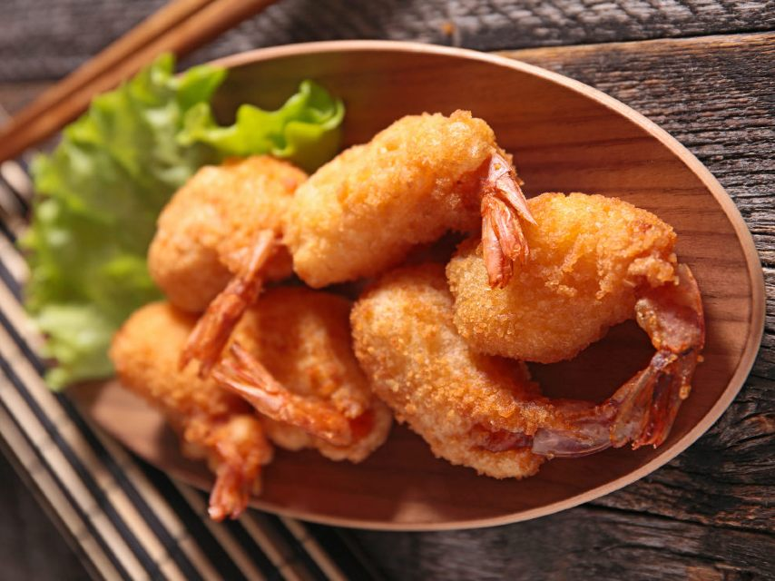

Shrimp Fritters

Description
An emergency recipe for aperitif or as appetizer. Very easy to make, these shrimp fritters are to be enjoyed hot.
Ingredients
- 500g Prawns
- 4 lettuce leaves, 1 Cucumber, 2 Lemons
- 150 g Wheat flour
- 1 egg, 1 glass of milk or water
- 10 g Baking powder, 5 pinches Pepper
- 1 tablespoon soy sauce
- 1 tablespoon white wine
- 1/2 teaspoon ground ginger
- 1/2 teaspoon sesame oil
- Oil for frying
Steps
- In a large bowl, add the flour, baking powder, pepper and egg. Mix gently to obtain a homogeneous mixture then add the milk. Beat everything with a whisk or an electric mixer until you get a smooth and homogeneous dough. Let the dough rest for 30 minutes in a cool, dry place.
- While the dough is resting, take care of the shrimp. Shell them taking care to leave the tail.
- Rinse the shrimp with water and wipe it off with a paper towel type towel.
- In a small bowl, pour the ingredients for the marinade and mix everything with a fork. Then place the shrimp in it and let them soak, stirring occasionally.
- In the meantime, cut the lettuce leaves into small pieces and cut the cucumber into rings. Then place them on a plate or serving platter as you like.
- In a large saucepan or wok, heat the oil to 180 ° C
- Remove the shrimp from the marinade (which you can then discard) and dip them in the dough, holding them by the tail.
- After dropping the excess dough, immerse them in boiling oil to fry.
- When the color of the fritters are golden, remove them using chopsticks or a skimmer, being careful not to burn yourself.
- Drain the shrimp using a paper towel. Enjoy!
Return to Homepage